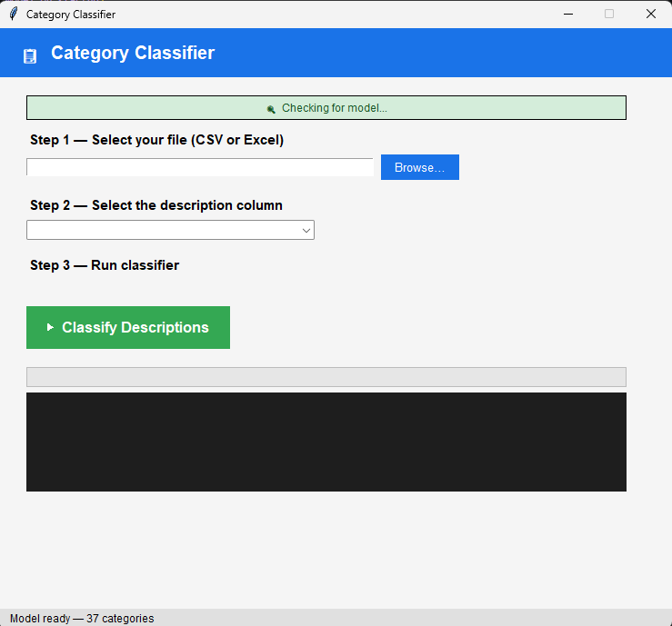
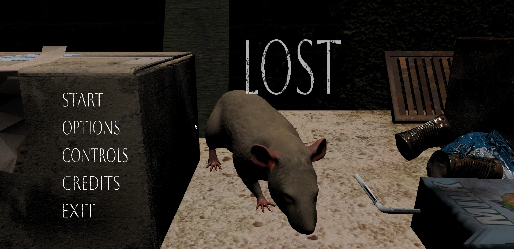
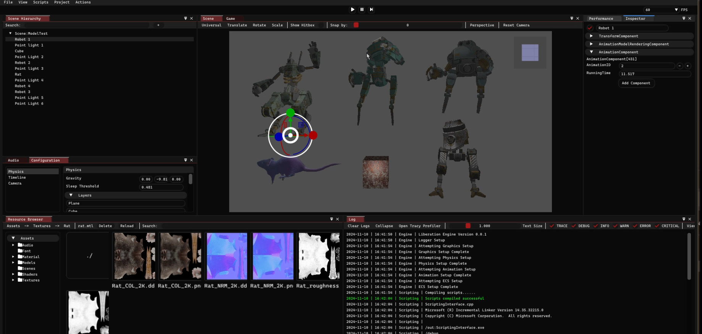
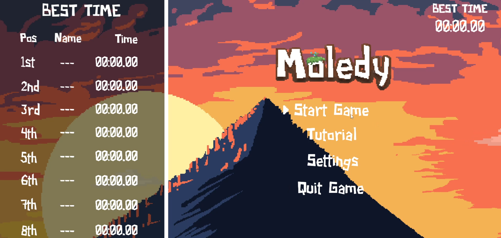
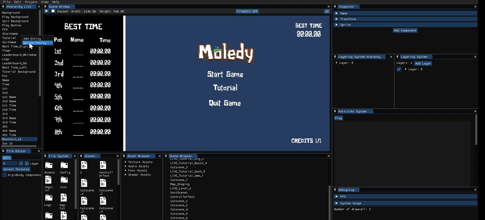
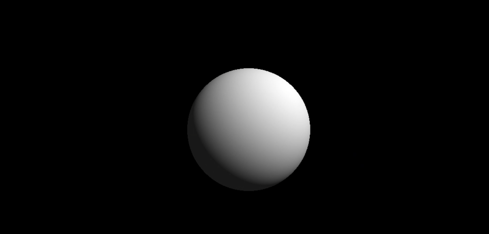
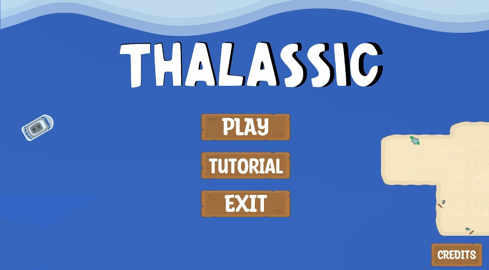

Building Health Visualisation
Nov 2025 – Mar 2026

This capstone project, developed during my internship at JTC Corporation, integrates data from multiple facilities management modules and presents it through an interactive 3D interface. Users can navigate and select buildings to view consolidated operational information, addressing data fragmentation for better monitoring and decision-making.
OSM
C++
OpenGL 4.5
ImGui
Problem Category Classifier
Jul 2025 – Aug 2025

Developed during my internship at JTC Corporation, I fine-tuned a BERT model trained on 35 categories to categorize job tickets based on their descriptions. The model classifies them into appropriate problem categories, improving automated issue resolution and analysis.
Python
Machine Learning
NLP
BERT

Lost is a 3D game built using my custom 3D game engine, where players take on the role of a rat navigating through sewers. The project focuses on a visually realistic experience with multiple dynamic light sources and shadow-driven visual effects, requiring careful handling of lighting, materials, and rendering performance.
C++
Game Dev
Custom Game Engine (3D)
Sep 24 – Apr 25

A custom 3D game engine built during my Year 3 studies. I worked as the Graphics Programmer, responsible for designing and implementing the rendering pipeline. My work included PBR lighting, shadow mapping, model loading, water rendering, and video playback, as well as framebuffers, post-processing, deferred rendering, and view frustum culling.
GLFWC++17OpenGL 4.5
FreetypeImGuizmoECS
Game Engine DevAssimp

Moledy is a 2D platformer built using my custom game engine. Players control a mole digging through underground levels to reach the surface. It is one of the most enjoyable projects I have built, as it allowed me to combine gameplay design with engine development.
C++
Game Dev
Custom Game Engine (2D)
Sep 23 – Apr 24

This project involved building a 2D custom game engine during my Year 2 Software Engineering module. My primary role was in the Graphics Programming, where I developed a batch-based 2D rendering system supporting textures, sprites, fonts, and animations. I also implemented scene systems such as framebuffers, entity picking, and particle effects.
GLFWC++17OpenGL 4.5
ImGuiImguizmoFreetype
Game Engine DevECSGLAD
Computer Graphics Projects
Jan 23 – Apr 23

These are some of the graphics projects I worked on during my time in school, showcasing core computer graphics concepts including instancing, fog effects, and ray tracing.
C++
Computer Graphics
OpenGL 4.5
THALASSIC
Sep 22 – Nov 22

Thalassic is the first game I developed with my groupmates, created as an introduction to game development and building core gameplay mechanics, user interface systems, and level interaction while exploring puzzle-based mechanics.
C
Game Dev